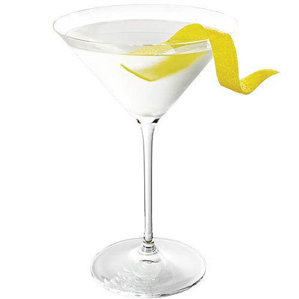

INGREDIENTES
- 60 ml de gin
- 10 ml de vermute seco
- Gelo
- Casca de limão ou azeitona (para guarnição)
INSTRUÇÕES
- Em um copo de mistura, adicione o gin e o vermute seco.
- Encha o copo com gelo e mexa bem até ficar bem gelado.
- Coe para uma taça de martini gelada.
- Guarneça com uma casca de limão ou uma azeitona.